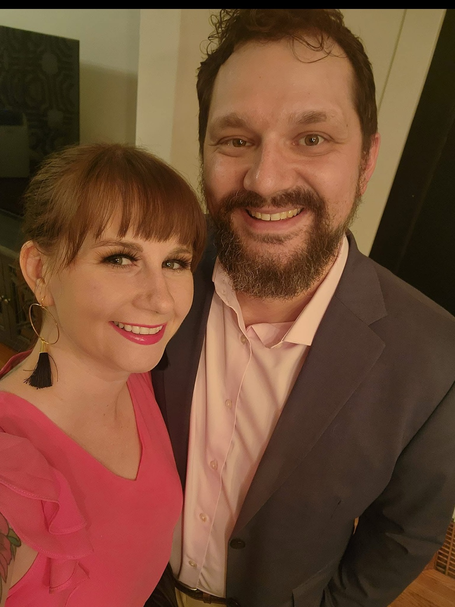
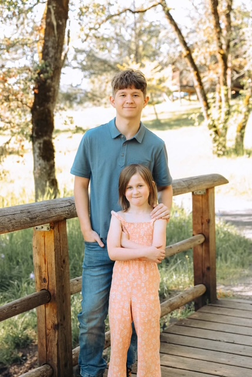
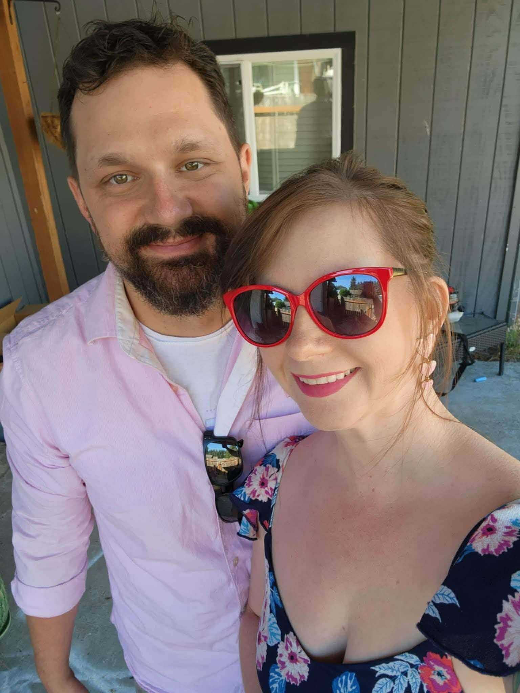
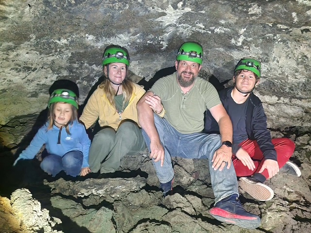
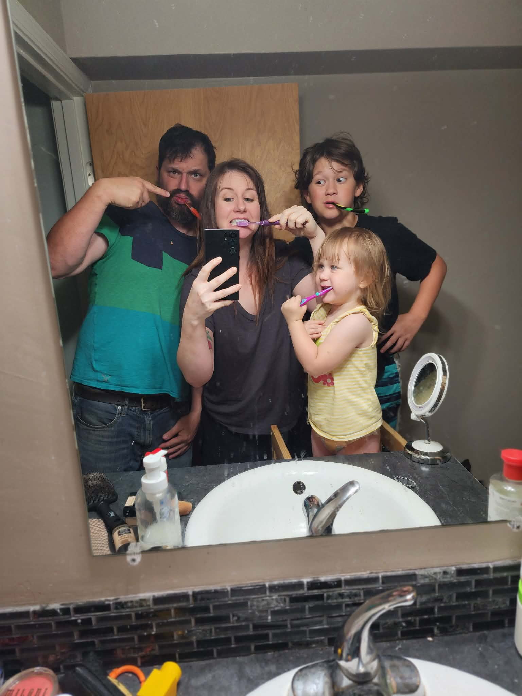

Andrew Fulton
Financial Strategist
Financial Strategist
Andrew spent years building a career in corporate America before deciding he wanted to give back in the ways he truly values. Now he's focused on fulfilling the dreams of his clients — and through that, the dreams of his own family — in ways that are impactful, not just transactional.
He and his family had a good friend pass away unexpectedly, unprepared, and they saw firsthand the damage that left behind for the people who loved him. That experience is what set Andrew's mind on making sure families are educated enough to make the choice not to let that happen to the people they love. He's also a U.S. Marine Corps veteran.
Andrew enjoys helping families see how easy it is to get the security they need, at a price they can afford, while building a retirement plan they never knew was possible for the average American. He's here to teach people how the wealthy build their financial trajectory — and to help them do it on a scale that fits their own life. He'll provide the information to anyone ready to take it in.
Andrew is married with two kids — a boy and a girl — and two dogs, Astrid and Clover. Outside of work he's happiest doing anything outdoors, along with painting, drawing, and gardening.
He describes himself like a duck on water: calm and collected on the surface, moving with purpose and intent underneath — and always happy to detour for a tasty snack.





"You'll miss every shot you never take."